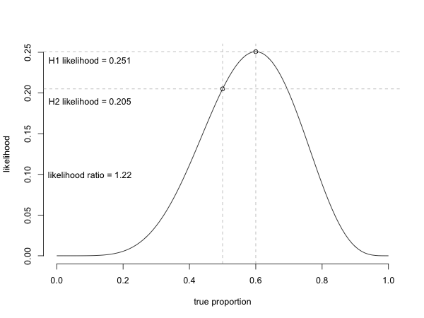

Week 1 lecture notes - PSYC 5301
Philosophical underpinnings
The goal of research is to find the one truth…however, the paths are many. Let's see how an ancient Hindu text can actually serve as a metaphor for how we do science.
Three paths to enlightenment (Bhagavad Gita, 500 BCE):
- Karma yoga - the path of action
- Jnana yoga - path of knowledge
- Bhakti yoga - path of devotion
These map nicely onto Royall's (1997) three questions one should ask regarding data:
- What should I do?
- What's the relative evidence?
- What should I believe?
Paths for research:
- Path of action: search for rules to govern our behavior such that, in the long run, we will not be wrong too often
- \(p < \alpha\): reject \(H_0\)
- \(p > \alpha\): remain in doubt
- A rule to govern our behavior in the long run. It tells us nothing about the current test.
- Path of knowledge: compare the likelihood of different hypotheses, given the data.
- suppose you flip a coin 10 times: you get 6 heads and 4 tails. Is the coin biased (unfair)?
- Two hypotheses:
- \(H_1\): the coin is biased (the true proportion of heads/tails is 0.6
- \(H_2\): the coin is fair (true proportion of heads/tails is 0.5
- Question: given the data, how much more likely is \(H_1\) than \(H_2\)
- 
- Path of belief: do I really believe this coin will come up heads 60% of the time?
- No…I have prior beliefs.
- One "experiment" with 6 heads does not change my prior beliefs
These paths form the basis of three dominant statistical paradigms in the psychological literature:
- Neyman-Pearson (the most common)
- Likelihood
- Bayesian
Neyman-Pearson method
Historically, our method of hypothesis testing (using \(p\)-values) is an amalgamation of two (quite different) ideas from a couple of early 20th century statisticians:
- Jerzy Neyman: \(p\)-value tells you what action to perform. If \(p<\alpha\), then we reject null hypothesis
- Ronald Fisher: \(p\)-value measures evidence…the smaller the \(p\)-value, the greater the evidence (this is actually incorrect)
- Note: when I teach undergraduate statistics, I teach only the Neyman method. - define \(H_0\)
- set \(\alpha\) (usually 0.05) and find the critical test statistic
- if test statistic exceeds critical, we we reject \(H_0\) (action)
- However, most psychological literature (and many courses) implicitly tack on the incorrect Fisher ideas.
- Example: I got \(p=0.03\) for "Effect 1" and \(p=0.003\) for "Effect 2"..which has "more evidence"?
- Answer: neither, but Fisher thought Effect 2 would have more evidence
- this understanding is implicit everywhere in psychology, but it is wrong!
This is why we hyphenate the two and refer to the entire paradigm as "Neyman-Fisher"